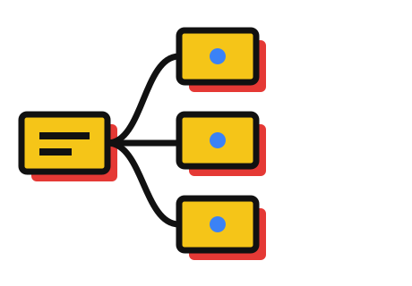

Week 3 · Day 1
Week one you built things. Week two you worked like a professional. This week you stop being the one at the keyboard.
What actually changes

The skill stops being how you phrase a request, and starts being how you set up the conditions other agents work in.
Where you are
What we build
Sixty delivery vans on a live map. A list of what is late. A heat map of which regions are in trouble. And a chat box you can tell to reroute a van.
The week
Nothing this week changes who is responsible for what ships. The agents get faster. The judgement stays yours.
Starting now
No code, no scaffolding, nothing. By the end of today it has a brief, a memory, its own vocabulary, and a specialist that only does one job.
What no code means here
You will not type a line of the application this week. You write what it has to do, you read what came back, and you say what is wrong with it. That reading is the skill.
Everything runs in a box
The reason we can let agents run without approving every step is not bravery. It is that by tomorrow afternoon they are running somewhere they cannot break anything of yours.
Watch this one
Six agents thinking at once is six times the spend. We put the number on screen before and after every build this week, so you always know what a technique actually cost.
By Friday